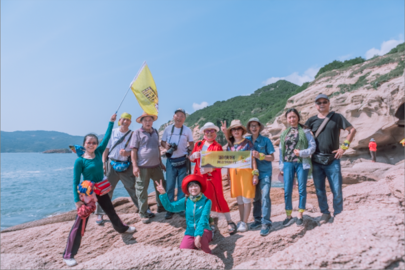

-
享受摄影的无穷乐趣
摄影的乐趣在于你可以用你手中的相机记录各个精彩的瞬间，留住人生中美好的时刻
-
学习精湛的摄影技巧
在这里你可以学到各种精湛的摄影技巧，你也可以把你的一些经验技巧分享给大家
-
欣赏优秀摄影作品
优秀的摄影作品总是让人赏心悦目，在这里你可以欣赏到国内外优秀的摄影作品
>
首届中国美好生活影像展入展作品公示
由中国摄影家协会·影像中国网携手金科地产集团股份有限公司联合主办的“首届中国美好生活影像展”，以“美好生活”为主题，自2017年1月活动启动以来，获得了广大摄影爱好者的关注，至2017年5月31日止，共收投稿22882幅（组）。内容展示了摄影人眼中的美好生活影像，充分发现和记录了身边的点点滴滴。
根据中央有关文艺评奖改革的要求和中国文联相关管理办法、规范，经过评委们的认真遴选，终评选出拟入选作品共90幅（摄影组），本着公平、公正的原则，即日起通过影像中国网予以公示，欢迎广大摄影人和社会各界进行监督。
《窗》2017魅族PRO7摄影大展征稿启事
“双瞳如小窗，佳景观历历”。当声音被喧嚣遮盖，当梦想被机械化的生活磨成平庸，当内心被躁动填满，每个人都为自己留下了一扇窗，“既不是向东，也不是向西，而是指向内心”。
画作，是连接画家与世界的窗；
音乐，是连接歌者与世界的窗；
文字，是连接作家与世界的窗。
窗的存在，让生活有了更多可能，让人生中的每一帧画面，都被完美记录。
解封您无限的摄影技能，《窗》2017魅族PRO7摄影大展锵锵登场！
无论您是拍客、摄影师、还是普通影友，都欢迎参加。
无论您使用专业单反相机、普通卡片相机、还是手机，都可以轻松参与。
【干货】Gopro视频拍摄进阶技巧！
这篇教程从思路到技巧，完整的解决了风光摄影后期中对比度的环节。风光摄影后期中，增减对比度是一个很重要的环节，也是一个很容易出问题的环节。易出现对比度不足或对比度太高，损失了细节等等一系列的问题。
那这个时候很多人会说，加对比度还不简单，在ACR或PS中直接向右拉对比度滑块，其实并不是这个简单，一键智能的工具常常会带来一些副作用，比如美颜相机，皮肤确实美白光滑了，但是鼻子眼，也都快磨平了。直接拉对比度，会让一些本来该虚化的地方对比度也增强了，还会出现高光过曝，暗部失去细节的情况。关于对比度的想法：照片的虚实关系在一定程度上可以引导我们增减对比度。可以简单理解为，我们想让这张照片实一些的地方，可以增加一些对比度，虚一些的地方，减一些对比度，有了这个思路之后，针对照片中哪里应该➕，哪里应该➖，就有概念了!

更多+
【调色教程】lightroom基础使用攻略
这篇帖子教大家使用一些lightroom的基础功能
如何导入图片
如何存储预设
如何批量处理
如何一键使用
另外也会给大家分享一个比较常用的小清新的调色教程，适合大部分的场景
福利：文末会给大家附上lightroom的下载地址以及预设包
左竹林（竺灵）:飘向天国的驼铃
广袤无垠的大沙漠充满着无限的憧憬和神密，景象奇伟壮观，缤纷多姿。远眺，峰峦叠嶂，沙脊如削，连绵起伏，似虬龙蜿蜒；近瞧，沙铺锦缎，千般柔软，沙峰如浪，金涛滚滚。音乐般的节奏，诗歌般的韵律。奇妙的光影伴随着蠕动的驼峰正在诠译、演奏着大漠畅想曲。
深入到大漠深处感受到这里是原生态的，清新纯净的空气，蓝澈的天空，没有受到任何污染的自然环境。领略到一种宽容无限与世无争的宁静，博大雄伟的自然景观以及自己的卑微和渺小。
悠悠岁月跨越千年留下沧桑风蚀的痕迹，声声驼铃将悲欢离合、喜怒哀乐、生离死别、成功失落、七情六欲都带入希望和光明的彼岸。
迎着耶稣之光我赶着羔羊走在通向天国的路上。
摄影并文： 左竹林（竺灵）
“ET保税”世界风光主题摄影展入选作品选登
本组作品选自由中国文联摄影艺术中心信息资源部、北京亦庄保税直购中心联合主办的“ET保税”世界风光主题摄影展入选作品。
著名雕塑大师罗丹说过：“生活中不是缺少美，而是缺少发现美的眼睛。”本次摄影展征集世界各地风光摄影作品，自2016年12月启动，2017年3月8日截稿，共收到来自全国各地的有效参评作品11916幅，从不同视角展现出世界各地的风光之美。
摄影并文： 左竹林（竺灵）
我们的服务
联系我们
Mauris est odio laoreet laoreet sapien non, sollicitudin bibendum nulla amet purus sodales blandit.